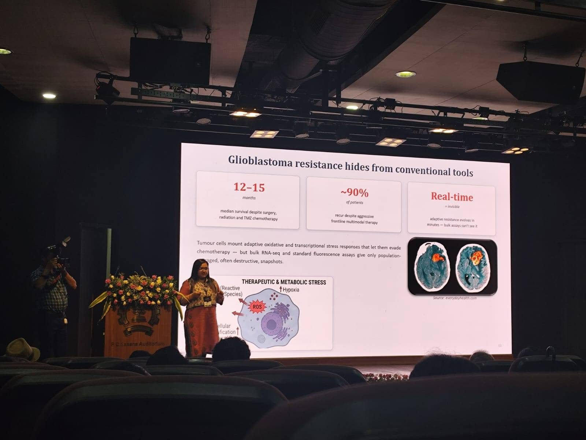

Invited talk
Invited talk at the National Conference on Quantum Biotechnology, IIT Bombay
Dr. Arpita was invited as a speaker at the National Conference on Quantum Biotechnology, IIT Bombay, to talk about NV-centre quantum sensing in glioblastoma.
Read more & photos